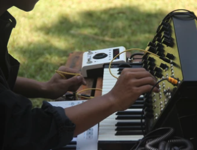

2023 / AV Performance
SONOKUAN

2022 - Conversatorio y performance audiovisual
ALGORÍTMICAS | Museo MAR
2021 - Performace Audiovisual Museo Mar
BREATHE OUT OF THE SPHERE

Bio
Diana León
Diana K. León es Ingeniería de Sistemas, directora creativa de oulibloom y artista audiovisual. Desarrolladora de software en varias compañías como Globant, Technisys, Band of Coders (Buenos Aires), Rolex (Paris), desarrollo mobile (android, iOS) en AppsWorld (Barcelona) y actualmente en CommonAreas (Online, USA). Utilizando processing, empieza a explorar el mundo de las visuales en tiempo real. Comienza con talleres de Processing: workshop en Free Art Bureau (Paris), Processing workshop en Studio NAND (Berlín). Realiza una residencia artística en Media arts and creative computing en SMU, dictado por Ira Greenberg, University of Edinburgh. Scotland. 2013. En el marco de la docencia, participa como docente en la UNICEN en la Facultad de Arte en dos materias: Programación creativa y Laboratorio de interactividad, en la diplomatura en narrativas transmedia y tecnologías de la interactividad, también en diferentes espacios talleres y workshops de manera independiente. Actualmente se encuentra realizando la Maestría en Tecnología y Estética de las Artes Electrónicas de la UNTREF.